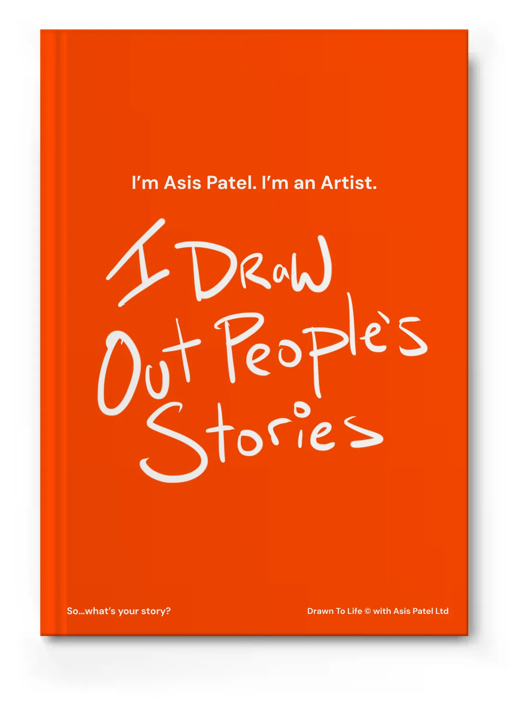
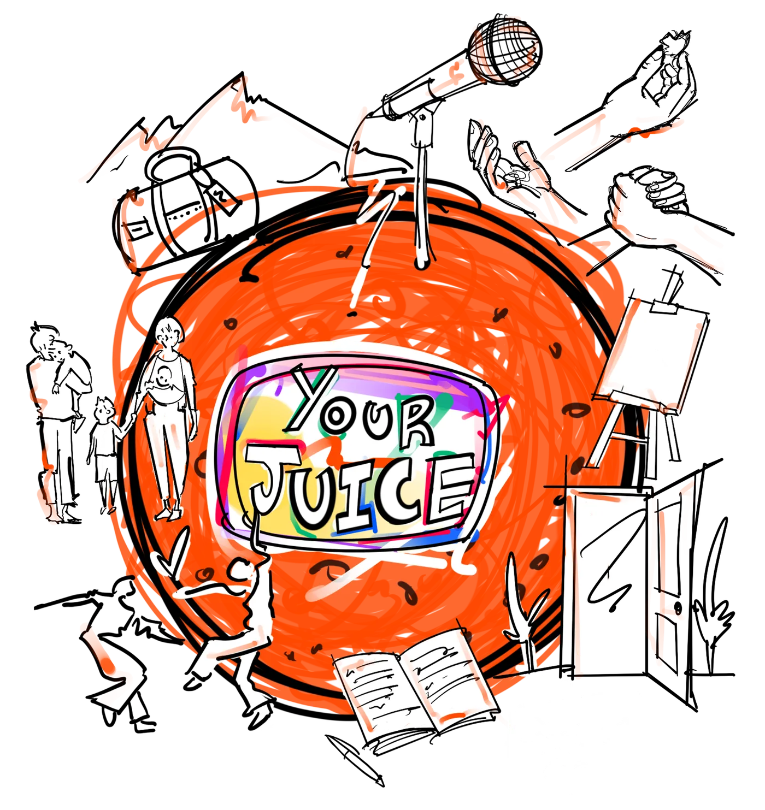
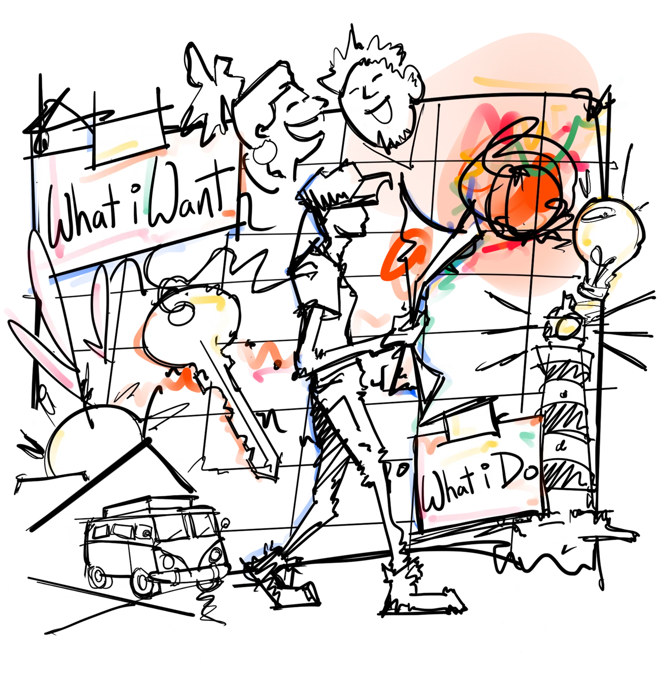
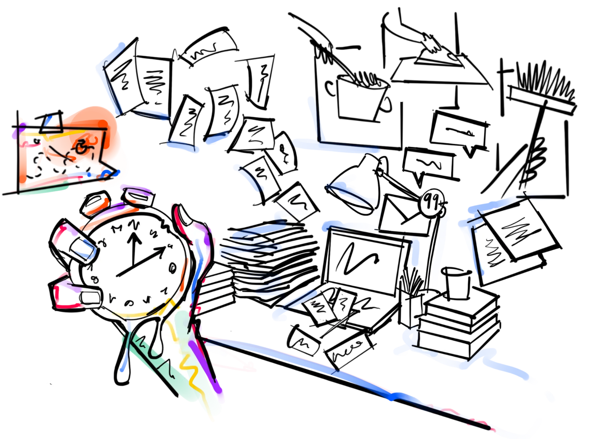
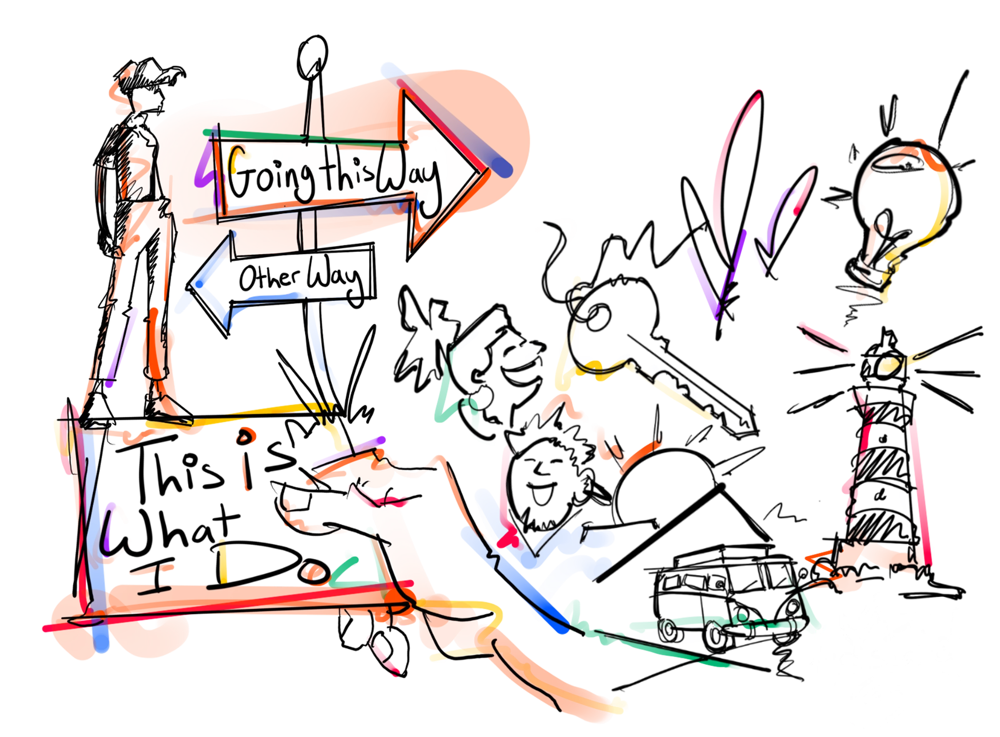
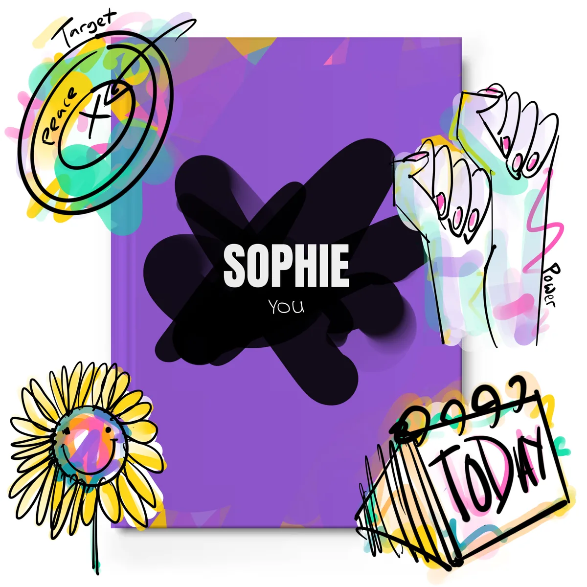

I'm Asis Patel. I'm an Artist. I draw out people's stories.

I’m on a mission to help people clearly see themselves and fulfil the life they want to live.
We are only here once.
experience the life you want to live while you’re here and earn a living serving others with what you want to do.

You have a zest for life and are deciding which adventure to go on next, or you’ve built a business from what you want to do and want others to easily understand it.

Life gets busy.
You don’t get to the life you know you want to live.
You don’t earn money doing what you want to do because people don’t understand the value of what you do.
Ultimately, the potential you know is already in you doesn’t get fulfilled.

The Juice is already inside you.
Together through conversation, we peel back the layers and draw out your story for life or business.
Written or illustrated.
Squeezed into a book, or turned into a website like this, or wherever you imagine sharing it.
See the life you want to live with your own story to guide you.
Others easily understand what you do, helping you attract the right people to work with and get paid what you’re worth.
Ultimately, fulfil the story you want to live.

I’ve spent my life exploring what fulfilment means to me. Like when I moved to Canada on my own with one bag and built a new life from scratch.
I spent over a decade building a career designing products for global businesses, startups, and agencies.
In 2019, I opened Asis Patel Ltd to earn by being me. I realised if I could do that, I could help others do the same.
I now work as an Artist drawing out people’s stories.
This is more than just a business. It’s proof of the fulfilling path I help others to find. One that I’m walking too.
"I was carrying a very big story. Not just what I do now, but everything that brought me here, the lived experience behind my work. I wanted my website to do more than explain what I offer. I wanted people to feel something when they landed on it.
Trying to distil the life story of a 59-year-old woman who naturally writes “War and Peace” into something clear, simple and meaningful was no small task, but Asis has a rare gift. He listens so deeply, reflects things back with real care, and somehow helps you find the essence of what you are trying to say without ever losing you in the process.
He helped me bring my story to life in a way that people can truly feel."
“I made a film and soundtrack, an ambient movie love letter to the blues and soul and gospel and rock n roll.
This project was a bucket list idea. It was messy. Before this process with Asis, in my head there was a lot of information. The process with Asis really helped to give me a lot of clarity on what it was I was actually working on. “Why did I just do this big project” became “Ahh this is what it is” I can now tell other people without it seeming insane.
It was like talk therapy. I felt like I was able to confide in somebody. I got to offload but I didn’t just walk away. I got this really lovely book that writes very clearly what I did. I wouldn’t have necessarily been able to illuminate it myself in the same way without Asis holding it back to me in a mirror."
“Before I met Asis, The Imagination Factory was already alive. What we do is we bring business strategy and imagination together. The challenge for me is the work has a lot of depth and richness and much of it is experiential so it’s not always easy to communicate the essence of it through words alone.
The process was beautifully collaborative. What was really valuable is Asis chose to experience The Imagination Factory so he wasn’t just looking at it from the outside he made a point of understanding the journey and the feeling behind it.
He asked very thoughtful questions. He reflected things back. He helped me notice connections and patterns that I hadn’t necessarily articulated myself. What I loved was he didn’t impose a story onto the work he listened deeply, he revealed the story that was already there.
What I have now is a visual story of The Imagination Factory that allows people to enter the world of the work more easily.”
"I was feeling a bit lost in myself and really not sure of where I was heading next. I was very much in need of a reset as well as renewed clarity, focus and drive.
I’ve never come across anyone doing the work that Asis does and now I know why because with what he brings and the unique gifts that he has something like this could only ever have come from him (and him alone).
Asis has really seen me and, more to the point, brought me back to me again. Working with him on this has restored that self-conviction that I was looking for and given me the inspiration and kickstart that I needed. I know who I am and what to do now."

Life Story
Sophie
"My life changed for good and I needed to accept it and move on with my new life journey.
Drawn To Life helped me see clearly how strong I am, how much I have achieved in the past even through the tough times. It made me see that I am able and capable of rising up again, accept the changes and create an even more peaceful life for myself. It made me see ME.
It gave me a powerful tool to move on to my next chapters in my life with courage and strength and a big smile.
Now I am living my life full of happiness, peace and waking up every morning looking forward to the day ahead.
Drawn to Life is a journey that helps you to see clearly what amazing future is ahead of you and how amazing a human being you actually are."
The Juice
Stories on squeezing out who you are into how you earn. Sign up to get each issue freshly squeezed into your inbox.